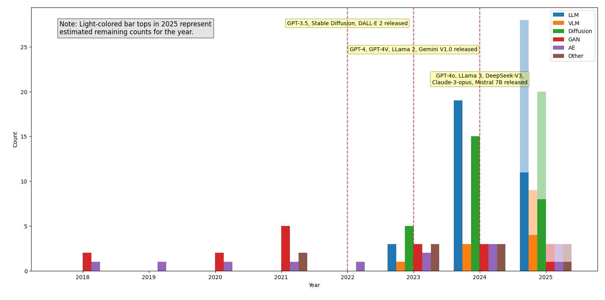

自律走行システム（ADS）は活発な研究分野であり、社会への大きな恩恵をもたらす可能性があります。しかし、公道への大規模展開の前に、多様な運転条件における機能と安全性を検証するための広範なテストが不可欠です。ADSの効果的・効率的なテストを達成することは依然としてオープンな課題です。近年、生成AIは多くの分野で強力なツールとして台頭し、文脈の解釈・複雑なタスクの推論・多様な出力の生成能力からADSテストへの適用が増加しています。本サーベイではADSテストにおける生成AIの役割を深く理解するため、91件の関連研究を体系的に分析し、ADSのシナリオベーステストを中心とした6つの主要な適用カテゴリに知見をまとめます。有効性を評価し、評価に使用されるデータセット・シミュレータ・ADS・メトリクス・ベンチマークの広範なリストをまとめ、27の制限を特定しました。本サーベイはADSテストへの生成AIの活用について概要と実践的な知見を提供し、既存の課題を明らかにし、この急速に発展する分野の将来研究の方向性を示します。
自律走行システム（ADS）は注目を集めており、将来のモビリティと道路安全性を向上させることが期待されています。しかし、大規模展開の前に、実世界の様々なシナリオでの安全で信頼性の高い動作を確保するための厳格なテストが必要です。このテストプロセスは複雑で、複数のテスト環境とアプローチを含みます。
EU規制（AVの型式承認に関する最新EU規制）によれば、製造業者はADSの許容可能な機能的・運用的安全レベルを実証する必要があり、性能要件の定義・テストによる評価・詳細な文書化・安全管理システムの維持・使用するシミュレーションツールの検証が含まれます。SOTIF（意図した機能の安全性）標準の目標は、関連するすべてのシナリオ、特にシステムとその他の道路利用者にとって難しく危険なシナリオをテストすることです。
ADSのテストは本質的に複雑で、これらのシステムは複数の機能モジュールと先進技術を統合し、オープンな運用環境で広範なシナリオを管理することが期待されます。すべての関連シナリオを効果的に特定し、テストでの適切なカバレッジを確保することは引き続き主要な課題です。
ADSにおける機械学習関連技術の採用は、説明可能性・安全性・ロバスト性に関する懸念をさらに高めます。UberのAVがアリゾナ州で歩行者と衝突した事故や、Tesla Autopilotが明るい空を背景にトラックを検出できなかった事故のような致命的な事故が依然として発生しており、現在のテスト慣行はADSの複雑さに完全に対処するにはまだ不十分です。
生成AIはChatGPT・DALL-E・GitHub Copilotなどのように、訓練データから学習したパターンに基づいてテキスト・画像・音声・動画・コードなどの新しいコンテンツを生成できるAIモデルのクラスを指します。近年、生成AIはADSテストへの適用が増加しています。
本調査は以下の3つの研究課題に焦点を当てています：
ADSは交通における動的運転タスクを持続的に実行し、道路交通での多様な運転シナリオを自律的に管理するように設計されています。主要な2つのアーキテクチャが一般的に採用されています：
ADSはSAE Internationalによって自動化レベル0から5の6段階に分類されます：
ADSのテストには以下の環境とアプローチが使用されます：
シナリオベーステストアプローチが広く採用されており、多様な運転シナリオと環境条件でADSの機能と安全性を評価することを目的とします。シナリオ生成の既存アプローチは以下に分類されます：
生成AI（GenAI）は訓練データから学習したパターンに基づいてテキスト・画像・音声・動画・コード・3Dモデルなどの新しいコンテンツを生成できるAIモデルのクラスです。主要なアーキテクチャと手法：
本調査はソフトウェアエンジニアリングの体系的文献レビューのガイドラインに従い設計されました。調査方法は4つの主要なステージから構成されます。
パイロット試行で既存の研究状況の予備的な概要を得て検索文字列を改良した後、複数のデータベースで文献検索を実施しました。すべての検索論文をスクリーニングし、スタディの目標に合致するものを選択しました。最後に、選択した論文の後方・前方スノーボーリングを実施して追加の関連研究を特定しました。
データ抽出ステージは含まれた論文を分析し主要情報を抽出することを目的とします：
データ合成ステージはテーマ分析アプローチを使って抽出された情報を一貫したモデルに統合することを目的とします。抽出されたサマリーを適切なコード（主要情報を正確に捉える短いラベル）でコーディングし、類似コードを共通テーマにグループ化し、類似テーマをより高いレベルのテーマにグループ化しました。著者間でワークショップを開催し（2025年7月4日）、すべての抽出データとテーマモデルをレビューしました。
データ合成とサーベイの初期ドラフト完成後（2025年8月13日送付）、検索とスノーボーリングで特定された全89論文の81人のユニークな第一著者または対応著者に原稿を送付しました。18件の回答を受け取り、フィードバックに基づいて原稿を修正し、推薦された2件の追加論文を組み込みました。結果として、本サーベイは合計91件の研究を含みます。
構成妥当性への潜在的な脅威は、生成AI・テスト・ADSの3つの主要概念の定義にあります。これを軽減するため、文献検索前に既存の定義を検討し最も広く受け入れられた明確に定義されたものを採用し、内部ワークショップでデータ合成のすべての疑義を解決し、著者レビューを実施しました。信頼性を高めるため、スタディの各ステップを徹底的に文書化し追跡可能にしました。
特に2023年以降、出版数の明確な上昇傾向が見られます。含まれる研究は2018年から2025年にまたがりますが、大多数（91論文中77論文、85%）は2023年から2025年の間に発表されました。この急激な増加はこのトピックが新興で有望な研究分野として注目を集めていることを示しています。
91件の含まれる研究のうち28件（31%）はピアレビューなしのarXivプレプリントです。掲載論文のうち65%（41/63件）はプレプリントが利用可能であり、この分野での成果の多くが正式な出版前にプレプリントとして共有されていることを示しています。
発表済みまたは採択された75件の論文のうち大多数（62/75件、83%）は学会論文で、残りの13件（18%）は学術誌論文です。これらは39のユニークな発表会場に分布し、AI/ML分野（CVPR・ECCV・NeurIPS・AAAI・ICCV）、ソフトウェアエンジニアリング分野（ASE・ICSE）、ロボティクス・自動化分野（ICRA・IROS・CoRL）、自動車分野（IV・T-IV）、インテリジェント交通分野（ITSC・T-ITS）を含みます。この幅広い発表会場は、ADSテストへの生成AIの使用が学際的な研究トピックであることを示しています。
ADSテストに生成AIを適用する研究では2023年以降に増加傾向が見られます。多様な生成モデルが研究に使用されており、LLM（特にGPTファミリー）が最も一般的に使用されています。
生成AI適用の主要な6つのカテゴリ：
一般に、生成AIはADSテストの生成タスクを達成する上で有望な結果を示しており、提案された生成モデルやアプローチは評価において選択されたベースライン手法を上回ることが多いです。
評価で使用される主要なデータセット・シミュレータ・指標：
評価はリアリズムギャップ（テストシナリオの現実感の欠如）が依然としてADSテストシナリオの重要な課題であるという既存の研究と一致します。
生成AIはADSテストで有望な結果を示しましたが、多数の制限が特定されました。
LLMの出力でのハルシネーション（幻覚・誤情報生成）は文献で一般的に議論・報告されています：
提案された緩和策として、意図的なファインチューニング・ラベルデータを使った訓練、またはシミュレーション結果をフィードバックとして提供するインタラクティブなアプローチが研究されています。
LLMは複雑なユーザーコマンドへの対応に苦労することが多いです：
LLMは意味的に等価でも異なる表現の入力を認識できないことがあり、一貫性のないシナリオ生成につながります。例えば「前の車が動かない」という表現が車両遮断行動として正しく解釈されないケースがあります。これはLLMが表面的な言語的変化に敏感であることを示し、プロンプト解釈における意味的汎化の改善の必要性を強調しています。
LLMは基礎となる確率的性質から一般的なパターンへのバイアスを示す傾向があります。数値の微妙な区別やシナリオ間のわずかな変化を捉えることが苦手で、クリティカルな閾値近辺の失敗シナリオ生成（ローカル探索）に不向きです。この問題への対応として、生成されたシナリオの既知のクリティカルシナリオへの近さを評価するPotential Analysis手法が提案されています。
LLMはシナリオ生成に必要なパラメータ範囲（車両速度・カットイン距離など）の正確な充填などのドメイン固有の微妙なタスクに顕著な制限を示します。この問題には適応的な戦略（LLMが十分な信頼を示す場合のみパラメータ範囲を生成し、それ以外はデフォルト値を使用）が提案されています。
特に2023年以降、生成AIをADSテストに適用する出版の増加傾向が観察され、このアプローチへの注目と潜在性の認識が高まっています。LLM（特にGPTファミリー）が最も一般的に使用されています。
生成AIは新しいシナリオ（特にレアで危険なクリティカルシナリオ）を生成するために広く使用されています。これらの知見は、効率的なシナリオ生成がADSテストの緊急のニーズと継続的な課題であることを強調する最近のサーベイ研究と一致しています。本研究は生成AIがADSテストにどのように使用されるかについての実践的な洞察を提供し、将来の研究への有用なリファレンスとなります。
一般に、生成AIはADSテストの生成タスクの目的を達成する上で有望な結果を示しており、提案された生成モデルやアプローチは様々な研究で選択されたベースライン手法を上回ることが多いです。リアリズムが最も頻繁に強調される属性として浮かび上がり、テストシナリオのリアリズムギャップが重要な課題であるという既存研究との整合を示しています。
全体として、評価は生成AIがADSテストへの有望で効果的なメカニズムであり、大きな可能性を持つことを示しています。これらの知見は、生成AIの幅広い文脈でのアプリケーションと有用性を検討する最近のレビューと一致しています。
生成AIはADSテストを促進する上で効果的で大きな可能性を持つことが証明されましたが、現在の生成モデルにはいくつかの共通の制限が残っています：
これらの制限は、広く採用され印象的な結果を示しているにもかかわらず、現在の生成モデルの弱点を反映しており、ADSテストのための生成AIを改善するための将来研究の重要なギャップと機会を示しています。
生成AIをADSテストに特化して焦点を当てた文献サーベイは非常に少ないです。主要な関連研究：
自律走行（AD）における生成AIの使用に関するサーベイが複数存在しますが、主な焦点はADSのテストではなく生成AIでADSを強化することにあります：
本研究に密接に関連する先行サーベイ：
生成AIは様々な形式で新しいコンテンツを生成して多様なタスクをサポートするために使用され、自律走行を含む多くのアプリケーションドメインで広く採用される技術となっています。自律走行は社会の進歩に大きく貢献することが期待されますが、あらゆる種類の運転シナリオでADSの機能と安全性を検証するテストは、運用環境がオープンエンドで潜在的な運転シナリオの範囲が広いため、重要かつ挑戦的な取り組みです。
本研究では、ADSテストへの生成AIの適用に関する91本の論文を収集・分析し、その基礎となるメカニズムを調査し制限を特定しました。主な知見：
結論として、生成AIはADSテストへの有望なアプローチで大きな可能性を持ちますが、このような特殊ドメインの幅広いタスクで現実的で正確な出力の生成を確保するためにはまだ多大な進歩が必要です。